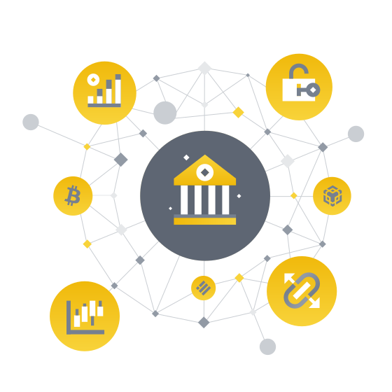

Индивидуальные решения, созданные нашими специалистами для тех жителей Казахстана, которые хотят работать сами на себя, достигнуть своих целей с помощью инвестиций в цифровые активы.
Исполнение и внебиржевые услуги
Получите доступ к гибким решениям по внебиржевой торговле (OTC).
Подробнее
Управление активами & Хранение
Храните и управляйте своими
цифровыми активами на лицензированной и регулируемой платформе.
Подробнее
Программа Support
Торгуйте на спотовых и фьючерсных рынках Binance с лучшей в мире ликвидностью и получайте личного трейдера,
который будет вас сопровождать и обучит вас зарабатывать на трейдинге цифровыми валютами.
Подать заявку

Почему компании выбирают Binance
Являясь
пионером в индустрии цифровых активов, Binance Institutional предлагает
индивидуальные передовые решения для всех типов учреждений:
Управление активами
Брокеры
Хедж-фонды
Семейные офисы
Проп-трейдинговые компании
Поставщики ликвидности
Частные лица с высоким уровнем дохода
Компании, занимающиеся майнингом
Юридическое лицо
Подробнее
Более 1450 спотовых торговых пар
Крупнейший объем торговли фьючерсами — более 200 контрактов
Многогранная экосистема блокчейна Binance
Доступ к самому большому криптовалютному пулу ликвидности
1-е место
по совокупности спотового и фьючерсного торговых объемов
100 млрд долларов
24-часовой максимум объема торгов
7,7 трлн долларов
годовой объем торгов
90 млн
зарегистрированных пользователей
Откройте свое будущее цифровых активов с Binance
Контакты
trade@binance.com
ул. Азербайжана Мамбетова 24, оф. 217
Астана 020000, Казахстан